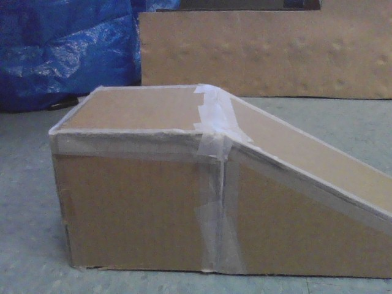
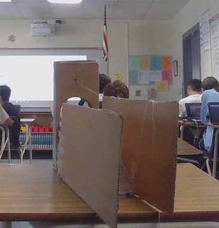
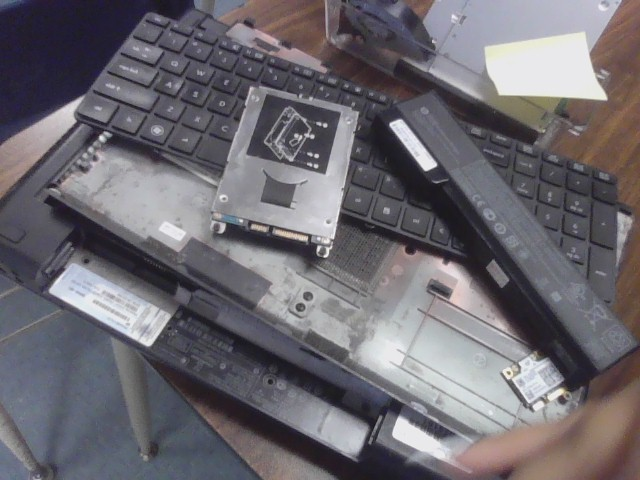

Hello, this is Aren Zakarian's website.
August 23, 2022 Week 1
Today we learnt eachothers name and found out one fun fact about them.
Some people knew everyone's name and found the activity very easy.
Others found it
difficult to keep track of everyone's names. For me though, it was very simple. We also did a
challenge when we had to get a marble in a jar from pipes. We had to work
hard as a team
September 2, 2022 Week 2
This week was a fun week with many new things implemented.
We satrted off with
tinkercad and making the Rube Goldberg machine.
It was complicated at first but I figured it out.
Then on Friday, we did the challenge.
We had to bring an object from school and
tinkercad it. Mine was bad because I chose a very difficult object. We had also looked at slides
for engineering and saftey. Later on, we had a quiz on the saftey
Personally it was pretty easy. I got through it with no problems.
September 9, 2022 Week 3
This week in our class we worked more on the tinkercad and the Rube Goldberg Machine.
My machine is not as simple as some but it will work out. I had attached the
baseball to the pulley for the baseball to then go down a slide and hit the car.
The car would then go down an incline and the car will have a needle attached
to it. As the car goes down the incline it will pop the balloon at the end.
Friday was a minimum day and we did our weekly challenge. We made an "E" and cut it out.
I cut Arman's E and I made sure his measurements were correct for the E to be symmetrical.
When he cut my E, it was perfectly measured so it worked out well.
September 16, 2022 week 4
At the start of this week on monday and tuesday, we completely only worked on our Rude Goldberg machine.
We started off pretty slow but we will finish it in time. Also, it was fun working on
it because we laughed a lot and made jokes. At first we were indecisive on how to start
but we put our minds to it and made it and so far it's going well. We so far only have two parts
taped and ready but we only have a few other parts left. On friday we made paper boats and
put weights on them for them to float. Ours only lasted 7 seconds because we put too much weights
on our boats. I learned a lot from this challenge though.

September 23, 2022 Week 5
This week was very productive for our group as we started off the week on monday working
on our Rude Goldberg machine for the last week. So we got to work on monday and made as much
progess as we could. Then on wednesday, we had to do MAP testing. Some questions were easy
and some were hard but I got through it with a decent score. Also on wednesday, we did more work
on our machine. We got a lot done that day and we were ready to test on Friday. On Friday,
we did not have a challenge but we put what we had worked on to the test. At first we failed,
but then we added walls to our ramp and bent the needle upwards so it would pop the balloon.
After a few tries we finally got our machine to work.

September 30, 2022 Week 6
At the start of this week on Monday we were told that we had finsihed our engineering unit.
Now we were ready to start a new one called computer engineering. On wednesday, we had a guest speaker
talking to us through a zoom call. He had a whole slide show ready to present to us and the other
engineering class. He talked about the jobs a computer engineerer could have and where he or she
could work. He talked about how much they earn. Lastly, he taught us the basics of whats
going on in compouter engineering. So we had an assignment to do. We had to completely take apart
a computer and put it back together. So we began and got a quick start since we had three people.
We were able to completely take out all the parts on the first day. So we started to color code the parts
on a seperate sheet of paper. On friday, we finished the coloring and then we put back our computer.
That was week 6 of engineering.
